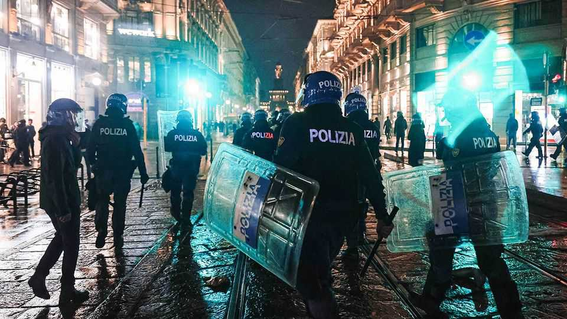

Unruly protests have shaken Albania, Italy and beyond
Radicals are turning demos into riots—and usually hurting their causes

Oct 22nd 2026
In several European countries, leftists inspired by weeks of protests in France have launched mass demonstrations of their own. But as in France, such protests are likely to benefit the right if they turn violent. The clearest case is Italy, where in October secondary-school students began imitating their French peers and occupying classrooms in protest against underfunding. Those have grown into broad demos over the cost of living, backed by left-wing parties and unions.
Things changed on October 17th, when several marches were hijacked by black-clad gangs. Riots erupted in Turin and Bologna, and fires were set in Milan’s Piazza del Duomo. Shops were looted, dozens of police injured and hundreds arrested. An October 17th Movement has emerged on Telegram and Instagram, calling for protests every Saturday until the government falls. A march is planned in Rome on October 24th, and many expect violence.
The rioters lack obvious leaders but have an unofficial soundtrack: Fabri Fibra’s “In Italia 2024”, a doom-laden anthem of social exclusion and rebellion. “We’re only at the beginning,” says Marracash, a rapper from Barona, a poor neighbourhood in Milan. The immigrant backgrounds of many rioters have provided ammunition for Matteo Salvini, head of the populist-right Lega party, to call for barring the Italian-born children of immigrants from acquiring citizenship if convicted of crimes.
Italy will hold a general election next year. Giorgia Meloni, the populist-right prime minister, has challenged the progressive Democratic Party and Five Star Movement to condemn the violence. By backing the legitimate demonstrations, they risk seeming to condone the rioting. Fear of disorder will probably benefit the right, says Raffaele Marchetti of the Luiss University in Rome. On October 20th Ms Meloni’s cabinet allowed preventive detention of minors, and gave policing powers to 500 soldiers in Milan. Yet the riots may benefit not her, but her rivals on the right. Roberto Vannacci, a far-right former general, and his opposition National Future party have said the police should use rubber bullets and dogs to disperse protesters.
Demos elsewhere also pit left against right. Spaniards have been protesting over housing costs since September, backed by Pedro Sánchez, the Socialist prime minister. Big protests over the cost of living have broken out in Portugal and Greece. On October 17th a few hundred far-left activists clashed with police in Brussels.
But the most violent demonstrations outside France and Italy are in Albania, and have a different background. Albanians have been protesting against the government of Edi Rama, the prime minister, since May 31st. For months the demonstrations were peaceful; prompted by a plan by Jared Kushner, Donald Trump’s son-in-law, to build a beach resort in a nature reserve, they were dubbed the Flamingo Revolution. But since October 13th a violent wing of the movement has attacked ministries, courts, banks and shops.
The Flamingo protests were always about more than resort development. Despite economic progress in recent years, Albania is one of the poorest countries in Europe and corruption levels are high. Mr Rama claims the riots are encouraged by Russia and Iran. He refuses to resign, and promises huge bonuses to police to take back the streets. One academic, who requested anonymity for fear of retaliation, said the protesters’ belief that they could force the prime minister out had been misplaced, but that his hard-line response had destroyed his legitimacy: “I don’t think there is any coming back from this.”
Most protesters despise the opposition leader, who was himself driven out as president by protests in 1997. But this week’s riots could mark the beginning of Mr Rama’s end. The riots in Albania, France, Italy and elsewhere do have one thing in common. Citizens are demanding things that governments, whether because of corruption or fiscal reality, cannot provide. ■